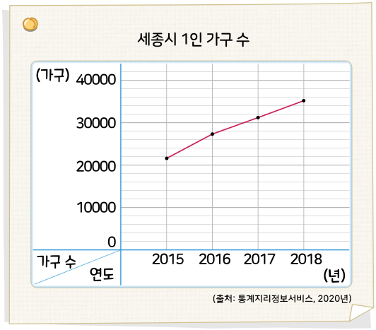

5. 자료와 꺾은선그래프
자료를 수집하여 분석해 볼까요
전개
수학
120
쪽
수학 익힘
86
쪽
2
에서 수집한 자료의 꺾은선그래프를 찾아보고 자료를 해석해 봅시다.
세종시 1인 가구 수를 나타낸 꺾은선그래프를 보고 알 수 있는 내용을 말해 보세요.
예
세종시 1인 가구 수는 늘어나고 있습니다.

2
에서 수집한 자료의 꺾은선그래프를 보고 알 수 있는 내용을 써 보세요.
예
○○시 65세 이상 1인 가구 수는 늘어나고 있습니다. 2020년의 ○○시 65세 이상 1인 가구 수는 2019년보다 늘어날 것 같습니다.